谈起
谈起第一章 从谈起
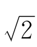
是人类最早发现的无理数之一。早在公元前500年左右，人们就会证明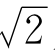
是无理数了。边长为1的正方形，它的对角线的长是多少？如果你已经学过勾股定理，马上就能算出它的长度是
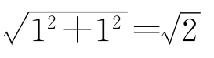
（图1-1）。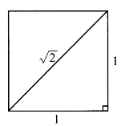
图1-1
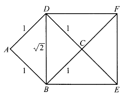
图1-2
不用勾股定理，也能算出这个对角线的长。如图1-2所示，正方形ABCD边长为1，面积为1；而正方形BEFD的面积是ABCD面积的两倍，也就是说BD2＝2，于是BD＝
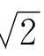
。显然，若正方形边长为a，则对角线长为
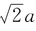
，即对角线长是边长的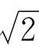
倍。我们知道，记号
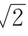
代表这样一个正数：x的平方等于2。换句话说，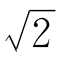
是二次方程式x2－2＝0的正根，通常把它叫做2的算术平方根。很明显，
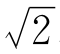
不是整数。因为1的平方比2小，2的平方又比2大，所以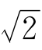
应当在1和2之间。在1和2之间，分数多得很，要多少有多少，而且是密密麻麻地挤在一起。那么，其中有没有这样一个分数，它自乘之后恰巧等于2呢？看来似乎应当有。真的有吗？那你找几个试试看，你一定找不到——不是太大，就是太小。尽管能找到平方很接近2的分数，但要想恰巧等于2，是不可能的。
也许你会说，1和2之间既然有无穷多个分数，那就不可能一个一个地试。既然不能一个一个地试，又怎能断定没有一个分数，它的平方等于2呢？
这个问题，早在2000多年前就解决了。请看：
[命题1]
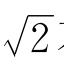
不是有理数。证法一 用反证法证明。先假设
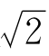
是有理数，如果从这一假设出发推出矛盾，便说明这个假设错了，即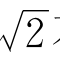
不是有理数。若
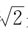
是有理数。由于有理数只包含正负整数、正负分数和0，而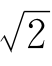
＞0，故必然有两个正整数n，m，使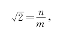
且n和m互质，即没有大于1的公约数。
根据
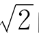
的定义，有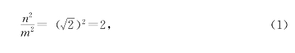
也就是
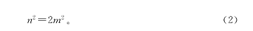
这个式子右端是偶数，故左端的n2也是偶数，因而n是偶数。于是可设n＝2k，代入（2）式得4k2＝2m2，即2k2＝m2。这推出m是偶数，说明n和m有大于1的公约数，与假设矛盾。
这个证明还可以说得更简单些：不必假定n和m没有大于1的公约数，直接观察（2）式，它的右端所含2的因数有奇数个，而左端含2的因数又为偶数个，这就有了矛盾。
证法二 仍用反证法证明。设
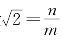
，n和m都是正整数，且n和m没有大于1的公约数。由（2）式n2＝2m2，
而在＋进制下，整数的平方的个位数字只能是0，1，4，5，6，9中之一，2倍之后只能是0，2，8中之一。所以，（2）式左端的个位数字是0，1，4，5，6，9中之一，而右端个位数字是0，2，8中之一。也就是说，两端的个位都是0，这说明n和m有公因数5，于是推出了矛盾。
在数学中，反证法很有用，尤其是要证明一个数是无理数时，更少不了反证法。上面介绍的第一个证法，曾出现在2000多年前希腊几何学家欧几里得（公元前300年左右）所写的《几何原本》一书中。这说明早在2000多年前，人们就知道
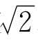
不是有理数，而且会用反证法来进行逻辑推理了。《几何原本》这部名著，是欧几里得总结、整理了当时他所收集到的资料写成的，并非他一人的研究成果。就拿“
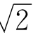
不是有理数”来说，这个事实是比欧几里得更早一些的毕达哥拉斯（公元前500年左右）学派的人发现的。毕达哥拉斯学派有一个基本观点，叫做“万物皆数”。在他们心目中，数就只有正整数，而且正整数也就是组成物质的基本粒子——原子。因此他们认为，一切量都可以用整数或整数的比来表示。他们觉得，一条线段就好比一串珍珠，这珍珠就是一个一个的点，不过又小又多罢了。按这种看法，两条线段长度之比，就应当是它们各自包含的小“珍珠”的个数之比，当然应当是可以用整数之比来表示的了。
据说，毕达哥拉斯学派一个名叫希帕苏斯的年轻人，第一个发现了正方形的边和对角线长度之比不能用整数之比来表示。用现在的话说就是“
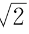
不是有理数”。这个发现直接和毕达哥拉斯学派的错误信条“万物皆数”相抵触，使这个学派的许多人大为惶恐和恼怒。据说，希帕苏斯在海船上向学派的其他成员讲述这个发现时，遭到激烈反对。由于他坚持自己发现的真理，竟被抛入海中淹死了。但是，真理是不会被永远淹没的。随着数学的向前发展，无理数终于在人们心目中取得了合法地位，被广泛应用于科学研究、技术推广和人们的社会生活中。
顺便提一下，用“
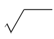
”来表示平方根，是解析几何的创始人笛卡儿（1596—1650）于16世纪首先采用的。那时，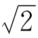
已被发现了近2000年，不少数学家已开始承认像 这类不能用分数表示的数了。
这类不能用分数表示的数了。
至于把整数和分数叫做“有理数”，据考证，倒是由于一开始翻译时的讹误。原来，“有理数”中的“有理”一词，英文是Rational。这个词本来有两个含义：其一是“比”，其二是“合理”。照数学上的原意，分数可以表示成两整数之比，把“有理数”叫做“比数”是很确切的。可是，日本学者在19世纪翻译西方的数学书时，把这个词译成了“有理数”。日本语言中本来就有很多汉字。后来，在中日文化交流中，中国又从日本引进了“有理数”和“无理数”这两个词，一直用到现在，没法改，也不必改了。
练习题一
1.若a，b是两个有理数，且a＜b，试证明一定有一个有理数x，满足a＜x＜b。
2.若a是有理数，b是无理数，问ab什么时候是有理数，什么时候是无理数？
3.求证：
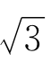
，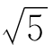
，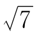
，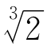
都不是有理数。4.若a，b是两个有理数，且a＜b，试证明一定有一个无理数y，满足a＜y＜b。
5.
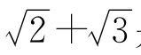
是不是有理数？为什么？6.若a，b都是无理数，a＋b是否一定是无理数？
7.若a＋b，a－b都是有理数，a和b是否一定是有理数？
8.已知线段AB之长为1，试利用直尺和圆规，画出长度为
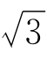
，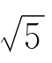
，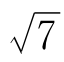
，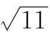
的线段。